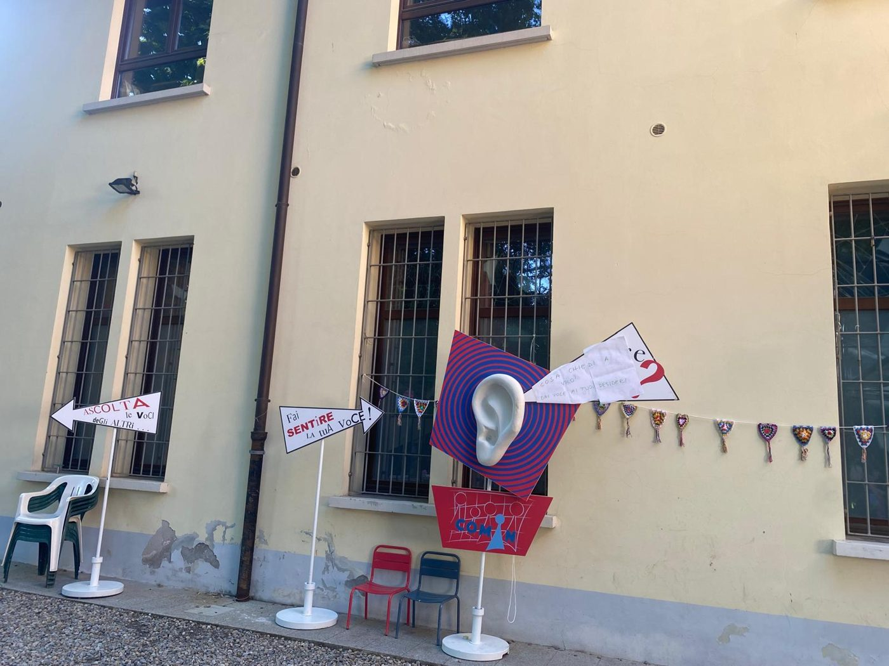
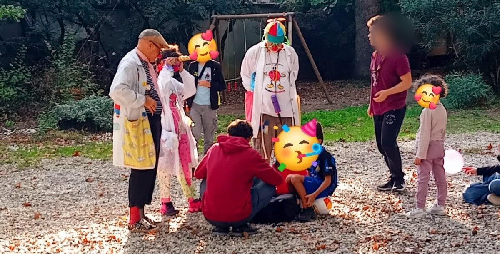
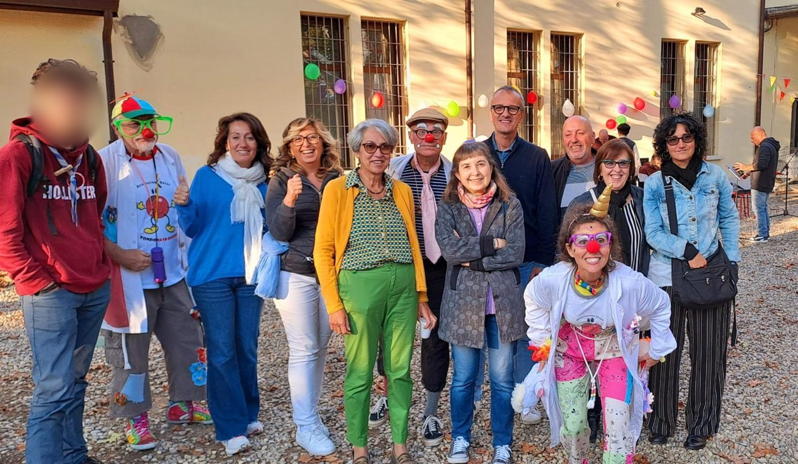
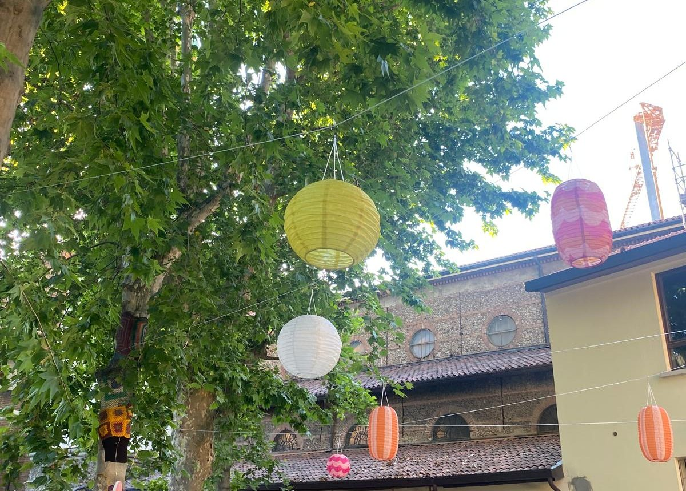
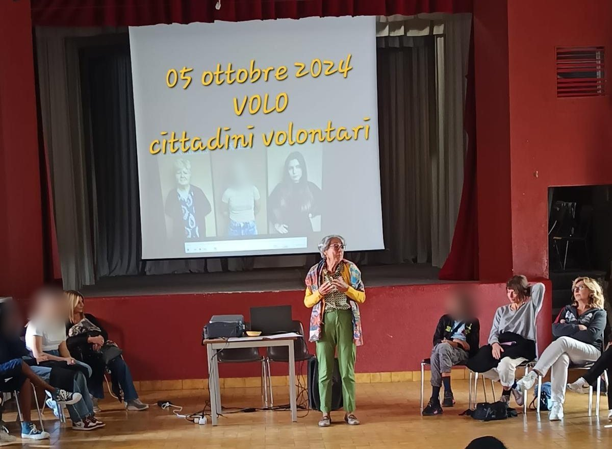

Volontari accanto a chi educa
Siamo un’associazione di volontariato con sede a Milano, iscritta al Registro Unico Nazionale del Terzo Settore.
Insieme vogliamo favorire e dare dignità a esperienze di volontariato sociale consapevole, e diffondere e valorizzare la cultura del volontariato come forma di cittadinanza attiva.
Oggi i volontari di VOLO operano soprattutto nelle comunità per minori e in altre realtà educative, per sostenere le équipe esistenti. Sono selezionati, formati, indirizzati al contesto e al ruolo più adatto, e accompagnati nell’attività.
Ci impegniamo anche in formazione, sensibilizzazione e raccolta fondi a sostegno dell’associazione e dei servizi in cui operiamo.
Chi siamo

Nel 2023 alcuni volontari che già operavano nelle strutture gestite dalla cooperativa Comin hanno deciso, d’accordo con la cooperativa, di organizzare meglio il loro servizio: più efficace e più coordinato con le esigenze delle strutture e dei loro utenti.
Il 7 ottobre 2023 è nata l’associazione «VOLO – Cittadini VOLOntari» con 24 soci fondatori. Nel primo periodo ci siamo dedicati a darle una struttura, fino all’iscrizione al RUNTS, per garantire a tutti la massima serietà anche nelle forme richieste dalla legge sul Terzo Settore.
La struttura è rimasta snella e composta interamente da volontari, per non distogliere risorse dallo scopo principale.
Abbiamo avviato il coordinamento tra i volontari esistenti e quelli che si sono uniti, organizzato con Comin giornate di formazione per i nuovi volontari e attivato uno sportello di orientamento per accompagnarli verso le attività in cui possono essere più utili.
I rapporti con la cooperativa Comin sono regolati da una convenzione approvata nel 2025. Gli aggiornamenti sulle attività sono nella sezione News.
I volontari

Sono cittadine e cittadini molto diversi per età, formazione e provenienza: studenti, lavoratori, pensionati che dedicano parte del loro tempo a un servizio presso strutture educative, soprattutto nel territorio milanese.
Secondo lo statuto, il volontario è una persona che, per libera scelta, svolge attività a favore della comunità e del bene comune, in modo personale, spontaneo e gratuito, senza fini di lucro, neanche indiretti, e solo per solidarietà. L’attività non può essere retribuita in alcun modo, nemmeno dal beneficiario.
Cosa si fa
Presso comunità educative residenziali e servizi per minori, i volontari aiutano nei compiti e nella vita quotidiana (pulizie, cucina, piccole riparazioni), partecipano a gite, giochi e feste, o passano qualche ora con bambini e ragazzi, chiacchierando, giocando o «annoiandosi» insieme. Operano sempre a supporto delle équipe educative, che restano le uniche responsabili dei ragazzi e delle comunità.
Vuoi unirti a noi o conoscerci meglio?
Scrivici a volo@coopcomin.org: ti proponiamo un primo colloquio di orientamento.
Come si diventa volontari
Il percorso prevede un colloquio conoscitivo e di orientamento, un secondo colloquio con il coordinatore del servizio individuato, e un percorso di formazione iniziale. Per operare nei servizi di Comin bisogna essere soci di VOLO, condividere la missione e i valori delle due realtà, partecipare alla formazione e all’accompagnamento e seguire un corso sulla salute e sicurezza sul lavoro. La formazione continua tutto l’anno: trovi il calendario degli incontri nella pagina dedicata. Maggiori dettagli nella pagina Convenzione con Comin.
Moduli per l’iscrizione
- Richiesta di iscrizione come socioDa compilare, firmare e inviare a volo@coopcomin.org (scansione PDF o foto leggibile)
- Informativa privacy e consenso al trattamento dei datiDa firmare insieme alla richiesta di iscrizione
- Moduli per i soci che svolgono volontariato attivoPatto di corresponsabilità, autocertificazione sull’assenza di condanne penali (per chi opera con minori), autocertificazione sul corso sicurezza, dichiarazione su Modello organizzativo e Codice di comportamento di Comin. Si firmano una sola volta e restano validi anche per gli anni successivi.
Moduli in altre lingue · Forms in other languages · Formulaires dans d’autres langues
- Richiesta di iscrizione per cittadini stranieri · Membership request for foreign citizens · Demande d’adhésion pour les citoyens étrangers
Italiano · English · Français - Moduli per i soci che svolgono volontariato attivo · Forms for active volunteers · Formulaires pour les bénévoles actifs
English · Français
Assicurazione
VOLO ha stipulato un’assicurazione per la responsabilità civile verso terzi e la responsabilità civile degli operatori. I costi sono sostenuti con il contributo di Comin, secondo quanto previsto dalla convenzione.
Rischi coperti
- Danni involontariamente provocati a terzi (persone e cose) dai volontari durante le attività dell’associazione, inclusi morte, lesioni personali e danneggiamenti. Per esempio: un volontario rompe un oggetto di un ragazzo ospite della comunità; danneggia la cucina mentre aiuta a preparare un pasto; ferisce un ragazzo durante un’attività manuale o sportiva; ferisce qualcuno spostando un tavolo alla festa annuale di VOLO.
- Danni provocati, anche con dolo, da persone di cui il volontario deve rispondere. Per esempio: un minore accompagnato al parco giochi ferisce un altro bambino con una pallonata; a una festa litiga con un altro bambino e gli rompe gli occhiali.
- Danni subiti dal volontario in quanto prestatore d’opera, durante lo svolgimento delle sue funzioni. I volontari non retribuiti sono comunque considerati prestatori d’opera.
Rischi non coperti
- Danni da circolazione su automezzi. Possono essere coperti dall’assicurazione degli automezzi di Comin o da quella dell’auto privata usata. Per esempio: l’utente accompagnato in auto si ferisce in un incidente, oppure il volontario urta qualcuno facendo manovra.
- Danni da auto o moto guidate da persone non abilitate o con meno di 15 anni.
- Danni da mancato, ritardato, insufficiente o inefficace intervento di assistenza.
- Danni a cose trasportate su autoveicoli.
- Danni a parenti e coniugi dei volontari.
- Danni da furto.
- Danni a cose altrui derivanti dall’incendio di cose detenute dal volontario.
- Altri casi particolari descritti in polizza.
Cosa fare in caso di sinistro
- Segnala ogni evento appena possibile e non oltre tre giorni da quando accade, meglio prima, con una descrizione e l’eventuale documentazione.
- È preferibile segnalare anche gli eventi dubbi, per verificare se sono coperti.
- Le segnalazioni vanno fatte a Simona Brusco: simona.brusco@coopcomin.org.
- Se la comunicazione manca o arriva in ritardo, l’assicurazione potrebbe non rispondere.
Questa è una sintesi semplificata e non esaustiva: in caso di differenze, prevale la polizza, disponibile su richiesta a volo@coopcomin.org.
- Scheda assicurazione volontari (PDF)La scheda illustrativa che consegniamo ai volontari
Formazione


Calendario 2026/2027
La partecipazione agli incontri di formazione è una delle caratteristiche proprie della nostra associazione, ed è prevista anche dalla convenzione con la cooperativa Comin. Condividere motivazioni, riflessioni e buone prassi, e rielaborare quello che accade nella quotidianità dei servizi, contesti di alta complessità relazionale ed emotiva, è per noi un grande valore. Non solo «fare qualcosa», ma «esserci in modo consapevole», collaborando con gli operatori professionali delle strutture.
Essere volontari in VOLO
Cascina Turro, piazza del Governo Provvisorio 9, Milano
Un incontro rivolto soprattutto ai nuovi volontari: condividere il senso del volontariato, dare spazio ai racconti di chi è arrivato da poco, mettere a fuoco il ruolo dei volontari e alcune attenzioni educative. Si conclude con un aperitivo insieme.
Il ruolo del volontario in comunità
Cascina Turro, piazza del Governo Provvisorio 9, Milano
Dopo tre anni di esperienza sul campo, un momento di ascolto e condivisione: che cosa ha funzionato, quali difficoltà abbiamo incontrato, quali miglioramenti possibili. Più attenzione ai temi degli adolescenti che vivono nelle tre comunità residenziali. Si conclude con un aperitivo insieme.
Il ruolo del volontario in comunità con i bambini piccoli
Casetta di Timmi, Carugo
Un incontro dedicato ai volontari che si occupano di bambini piccoli, in continuità con il lavoro iniziato lo scorso anno. La data sarà concordata con i volontari e gli educatori della Casetta.
La collaborazione tra educatori e volontari in comunità
Da tre anni sperimentiamo la collaborazione tra personale educativo e volontari: è il momento di fare il punto. Parallelamente agli incontri con i volontari, gli educatori affronteranno il tema nelle loro ore di formazione; seguirà un confronto in plenaria tra rappresentanti di educatori e volontari per mettere insieme i punti di vista ed elaborare alcune linee guida. Vorremmo dare spazio anche alla voce di bambini e adolescenti, e stiamo valutando come raccogliere i loro pensieri.
Non solo comunità
Cascina Turro
La presenza dei volontari si sta allargando ad altri servizi di Comin: compito di VOLO è sintonizzarsi con i bisogni formativi dei singoli contesti per accompagnare al meglio i volontari. Sono previsti incontri a Cascina Turro, un contesto di aggregazione e socialità che coinvolge le famiglie della zona.
Come partecipare
Per organizzare al meglio gli incontri, manda una mail di adesione a volo@coopcomin.org. Chiarimenti, domande e dubbi sono sempre ben accolti: basta scrivere allo stesso indirizzo.
Il percorso di formazione fa parte degli impegni descritti nella convenzione con Comin.
Il Consiglio Direttivo
Il Consiglio Direttivo amministra l’associazione secondo gli indirizzi dell’Assemblea degli associati e ne cura le relazioni e le attività. Si riunisce periodicamente, coinvolgendo anche i soci disponibili a sostenerlo.
I membri
- Paola Cannì, presidente
- Claudio Figini, vicepresidente
- Lorenzo Cavallotti, segretario
- Simona Brusco
- Giovanni Cappelini
- Chiara Lunelli
- Marcella Muscu
- Roberta Raviotta
La convenzione con Comin
VOLO è promossa dalla cooperativa sociale Comin e ne condivide i valori fondanti. Una convenzione, approvata dal CdA di Comin il 17 aprile 2025 e dal Direttivo di VOLO il 14 maggio 2025 e firmata a Milano il 24 maggio 2025, regola la collaborazione tra le due realtà. Ecco i punti principali.
Scopo
Disciplinare la collaborazione per la gestione di alcuni servizi di Comin: non solo l’intervento sul campo, ma anche il lavoro di ricerca su come rispondere ai bisogni sempre più complessi che emergono dai servizi educativi nei territori. Le due parti si impegnano anche in attività di sensibilizzazione e promozione del volontariato e in azioni per il benessere di volontari e operatori.
Cosa fa Comin
Mette a disposizione di VOLO come sede i locali di via Pimentel 9 a Milano e si impegna perché i volontari possano operare nei suoi servizi in modo proficuo, in stretta collaborazione con soci e dipendenti.
Cosa fa VOLO
Organizza corsi di formazione e momenti di supervisione per i volontari, tratta i dati personali nel rispetto del GDPR, si uniforma agli adempimenti sulla sicurezza nei luoghi di lavoro e, su richiesta di Comin, partecipa a raccolte fondi per progetti in cui sono impegnati i volontari. Si impegna inoltre a far conoscere ai volontari il Modello organizzativo e il Codice di comportamento di Comin (D.Lgs. 231/2001).
Selezione, formazione e accompagnamento
Uno sportello di informazione, orientamento e selezione offre un primo colloquio; individuato il servizio, un secondo colloquio avviene con il coordinatore. Segue una formazione iniziale e poi incontri ricorrenti, accompagnamento sul campo e uno spazio di ascolto, in rapporto costante con gli operatori e con il referente dell’équipe territoriale dei volontari.
I volontari
Per operare nei servizi di Comin i volontari devono essere soci di VOLO, condividere la missione e i valori, aver seguito la formazione, aver letto il Modello organizzativo e il Codice di comportamento e aver seguito i corsi sulla salute e sicurezza sul lavoro (Comin ne organizza periodicamente a sue spese). Operano di norma insieme agli operatori della cooperativa; in alcune situazioni previste, per esempio per accompagnamenti semplici, possono operare anche in loro assenza. Un rapporto continuativo con una persona accolta deve essere previsto e autorizzato formalmente.
Assicurazione e trasporti
VOLO stipula una polizza di responsabilità civile per i soci, e Comin ne sostiene i costi con modalità concordate di volta in volta. I volontari possono usare i mezzi di Comin, coperti da polizza anche a loro tutela; se usano la propria auto possono chiedere il rimborso chilometrico previsto per gli operatori.
Sostegno economico
I presidenti delle due realtà si incontrano almeno una volta l’anno per valutare il bilancio di VOLO e cercare, anche con raccolte fondi congiunte, le risorse necessarie. Solo in ultima istanza Comin e VOLO possono concordare un sostegno economico da parte di Comin.
Durata
Cinque anni dalla firma, con rinnovo tacito per un periodo uguale in assenza di disdetta scritta.
Lo statuto
Lo statuto regola tutti gli aspetti della vita dell’associazione. Puoi scaricare la copia in vigore qui:
- Statuto (PDF)Allegato A all’atto costitutivo del 7 ottobre 2023, registrato presso l’Agenzia delle Entrate
Bilanci
I bilanci sono redatti secondo le modalità previste per gli enti del Terzo Settore e depositati presso il RUNTS dopo l’approvazione dell’assemblea. Qui trovi i documenti presentati ai soci e una sintesi dei dati. Il bilancio 2025 è stato approvato dall’assemblea dei soci.
| 2024 | 2025 | |
|---|---|---|
| Entrate | 470,00 | 980,00 |
| Uscite | 160,66 | 592,48 |
| Avanzo dell’anno | 309,34 | 387,52 |
| Avanzo anni precedenti | 340,00 | 649,34 |
| Avanzo di gestione (deposito bancario) | 649,34 | 1.036,86 |
2024: entrate da quote associative; uscite per spese bancarie, PEC, firma digitale. 2025: entrate da quote associative e contributo Comin; uscite per assicurazione, spese bancarie e PEC; minori uscite del previsto per iniziative.
| Entrate previste | 1.700,00 |
| Uscite previste | 1.540,00 |
| Avanzo previsto | 160,00 |
| Avanzo anni precedenti | 1.036,86 |
| Avanzo di gestione previsto | 1.196,86 |
Il preventivo 2026 prevede anche entrate da raccolta fondi, da usare per iniziative in favore dei ragazzi. Un minimo patrimonio permette di anticipare fondi per le iniziative, anche partecipando a bandi.
Per sostenerci
Ci finanziamo con le quote dei soci, le donazioni e il 5 per mille. Teniamo le spese di gestione al minimo indispensabile e destiniamo il massimo al supporto diretto delle attività di volontariato. Puoi vedere come usiamo le risorse nella pagina Bilanci.
Donazione con bonifico
Intestato a: Associazione Volo – Cittadini Volontari
IBAN: IT37W0306909606100000402742
5 per mille
Nella dichiarazione dei redditi inserisci il nostro codice fiscale 97958810158. Non comporta nessuna spesa aggiuntiva per te.
Vantaggi fiscali
VOLO è una ODV: persone e imprese che fanno una donazione possono scegliere se inserirla tra gli oneri deducibili o tra le detrazioni per oneri. Le erogazioni liberali, tranne quelle in contanti, sono deducibili dal reddito o detraibili dalle imposte al 35% (art. 83, comma 1, D.Lgs. 117/2017). La quota annuale di iscrizione non è né deducibile né detraibile.
Per i bonifici l’estratto conto vale come ricevuta; conservalo ai fini fiscali. Puoi anche chiedere una ricevuta specifica a volo@coopcomin.org.
News
Contatti
Scrivici a volo@coopcomin.org
Sede: via Fonseca Pimentel 9, 20127 Milano
PEC, solo per comunicazioni formali: volocittadinivolontari@pec.it
Siamo anche su Instagram: @volocittadinivolontari.
Privacy
L’associazione tratta i dati personali dei soci secondo il Regolamento UE 2016/679 (GDPR). Titolare del trattamento è VOLO – Cittadini VOLOntari ODV; i dati sono trattati dai membri del Consiglio Direttivo per gestire l’iscrizione e la partecipazione alle attività, sono comunicati alla cooperativa Comin e, per la partecipazione a bandi, a enti pubblici e partner, e non vengono diffusi né trasferiti fuori dall’Unione Europea. Sono conservati finché si resta soci. Per accedere ai dati, correggerli, cancellarli o revocare il consenso scrivi a volo@coopcomin.org.
- Informativa sul trattamento dei dati personali (PDF)Da leggere e firmare, con il consenso, insieme alla richiesta di iscrizione
Link utili
Le realtà con cui collaboriamo: